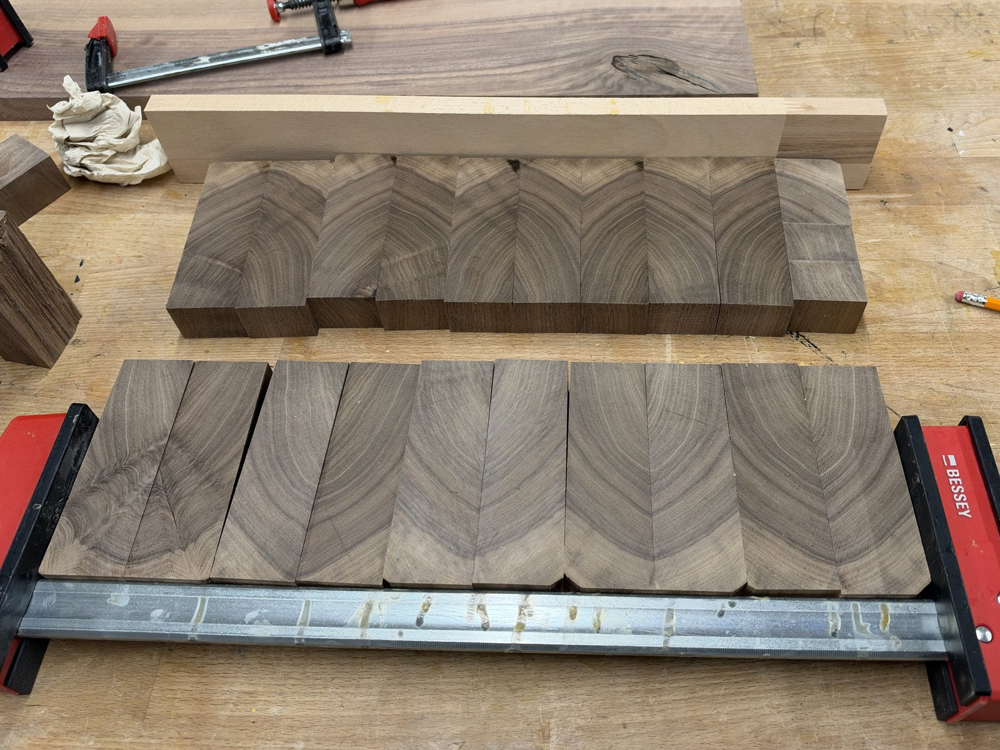
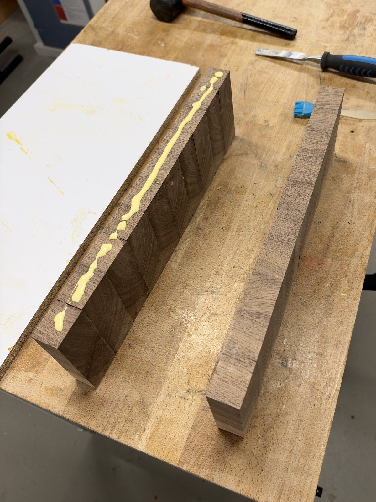
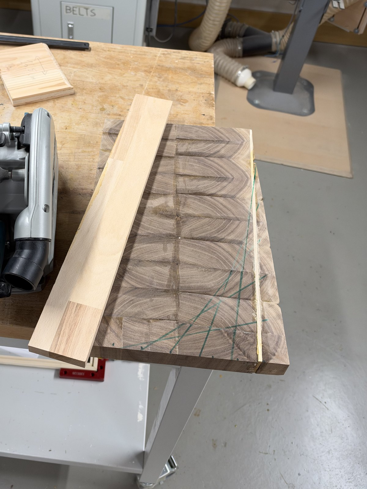
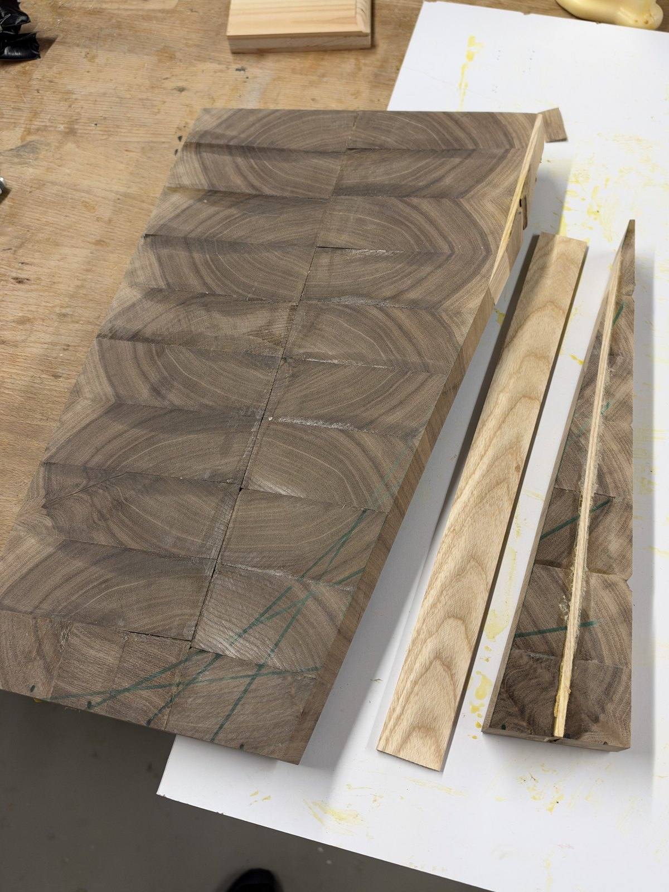
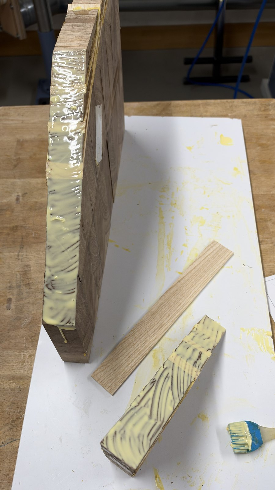
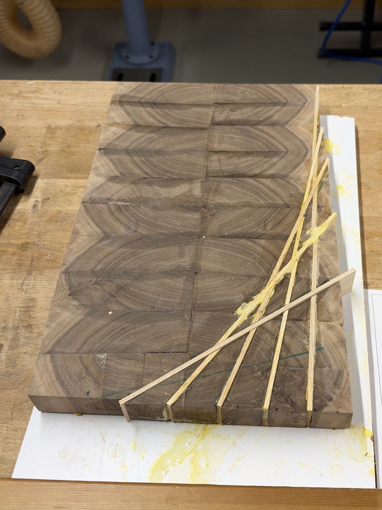

A 27 cm × 37 cm × 27 mm end-grain cutting board uniting 20 bookmatched European Walnut (Juglans regia) blocks with six intersecting European Ash (Fraxinus excelsior) tangent inlay rays. Engineered through sequential guided plunge cuts to weave a mathematical parabolic curve across cathedral growth rings.
Project Specifications & Workshop Parameters
Final Dimensions
27.0 cm width × 37.0 cm length × 27 mm (2.7 cm) thickness
Raw Cured 6-Ray Glue-Up vs. Trimmed & Fine-Sanded Geometry
Drag the center handle to compare the raw laminated panel fresh out of the clamps—with overhanging Ash strips and cured Titebond III squeeze-out—against the squared, surfaced, and 320-grit honed board.
Raw Cured 6-Ray Glue-UpSquared & Fine-Sanded (27 × 37 cm)
Process Documentation
The Complete Workshop Build Log
A chronological 17-photo and HD video record of bookmatched end-grain choreography, dual-column lamination, parabolic tangent drafting, and six-stage iterative kerf weaving.
Step 01Grain Choreography
Bookmatching 20 End-Grain Walnut Blocks into Cathedral Arches
Every compelling geometric board starts long before the first inlay cut—with disciplined grain selection. Twenty thick end-grain blocks of seasoned European Walnut (Juglans regia) were crosscut from sequential stock and arranged on the bench in two columns of ten rows.
By flipping adjacent blocks in mirror pairs, the sweeping annual growth rings meet along each seam to form symmetrical gothic arches and central diamond medallions. Beyond pure aesthetics, alternating the growth-ring curvature balances seasonal tangential movement across the 27 cm width.
Symmetrical end-grain choreography across all 20 walnut blocks prior to adhesive assembly.Click to enlarge
When consecutive slices from the same walnut cant are opened like the pages of a book, both earlywood and latewood growth rings align to the fraction of a millimeter along the center seam—turning organic tree rings into deliberate architectural symmetry while neutralizing cupping forces.
Step 02Column Staging & Dry Fit
Dual-Column Layout & Parallel Clamp Calibration
Rather than attempting a chaotic 20-block glue-up all at once, the matrix was divided into two manageable 10-block linear columns. Each column was staged against a planed hardwood reference fence alongside a Bessey K-Body REVO parallel jaw clamp.
A careful dry clamping pass verified that all mating faces closed with zero daylight under light pressure—critical insurance before opening the glue bottle.

Parallel jaw setup ensuring dead-straight axial registration along the 37 cm column length.Click to enlarge
Final dry inspection confirming seamless ring transitions across every joint.Click to enlarge
Step 03First Lamination
Wetting Out Open End-Grain Tracheids & Column Glue-Up
Generous beads of waterproof Titebond III Ultimate aliphatic resin were extruded across the mating faces of the walnut blocks seated directly on the Bessey clamp rail.
Using a flexible silicone glue brush, every bead was worked into a uniform, unbroken film across the entire face. Even brushing prevents hydraulic dry spots and ensures every edge joint cures stronger than the surrounding wood fiber itself.
Systematic glue application directly on the parallel clamp bar.Click to enlarge
Step 04Master Blank Assembly
Joining the Twin 10-Block Columns Along the Center Seam
Once both 10-block sticks cured for 24 hours, their mating central edges were jointed clean and square to establish a razor-tight longitudinal seam down the middle of the board.
Seated on a non-stick white melamine board, a continuous bead of Titebond III was laid along the center spine and brushed smooth before locking both halves together into a monolithic end-grain walnut slab.

Center spine glue bead ready for brushing and cross-panel clamping.Click to enlarge
Step 05Mathematical Drafting
Plotting the 6-Ray Parabolic Tangent Envelope
With the two walnut columns clamped flat under heavy F-clamps, the geometric inlay layout was drafted directly onto the raw end-grain surface in green layout marker.
Six equidistant division points were marked along the lower edge and paired sequentially with six equidistant division points climbing the right edge. Connecting point 1 to 1, 2 to 2, through 6 to 6 produces a family of straight rays whose inner intersections trace a smooth quadratic Bézier parabola.
Equidistant edge divisions connected by straight rays generate an emergent parabolic curve.Click to enlarge
Geometric Theory: Straight Cuts, Curved Illusion
In projective geometry, connecting uniformly spaced points along two intersecting axes creates the tangent envelope of a parabola. Although every saw kerf and every Ash strip is 100% dead straight, the eye perceives a sweeping, organic curve framing the dark walnut cathedral grain.
Step 06Inlay Ray 01
First Through-Cut & European Ash Strip Lamination
The inlay sequence begins with the steepest outer ray. After slicing cleanly straight through the walnut blank along the first layout line, a precision-milled strip of pale European Ash (Fraxinus excelsior) was glued between the two severed walnut sections.
Once cured, the protruding ends and glue squeeze-out are flushed clean so the board once again behaves as a solid, single-piece blank ready for the second intersecting cut.
Ray 01 complete: establishing crisp blonde-on-chocolate contrast along the right flank.Click to enlarge
Cutting acute diagonal angles across a 27 mm thick end-grain slab requires rock-solid guidance to prevent blade deflection. For each subsequent tangent ray, a planed hardwood straight-edge fence was clamped across the bench at the exact layout angle.
Riding tightly against this captive fence with shop dust extraction attached, a cordless Makita 36V (18V×2) brushless plunge saw sliced effortlessly through both the dense walnut end-grain and the previously embedded Ash inlays, leaving glass-smooth glue-ready kerf walls.

Clamped straight-edge fence guaranteeing zero lateral wander across the angled cut.Click to enlarge
High-RPM carbide plunge cut slicing cleanly through walnut end-grain and prior Ash inlays.Click to enlarge
Whenever a saw blade slices across an existing inlay strip at an angle, removing the blade's kerf width (~2.2 mm) would shift the severed halves of the earlier strip out of collinear alignment—unless the new inlay strip inserted into that cut matches the exact kerf thickness removed!
By milling every European Ash strip to match the saw kerf precisely, previously inlaid rays remain laser-straight across every new intersection. During glue-up, a longitudinal stop caul and diagonal Bessey F-clamp counteract hydraulic glue slip along the steep bevel.

Milling Ash strips to match the saw kerf preserves collinear alignment across intersecting rays.Click to enlarge
Cross-axis clamping geometry locking both perpendicular compression and longitudinal registration.Click to enlarge
The Golden Rule of Intersecting Inlays: Kerf Thickness Matching
If an inserted strip is thicker or thinner than the saw blade kerf, every earlier strip it crosses will stair-step sideways at the intersection. Calibrating the Ash strip thickness to the exact blade kerf ensures earlier rays run visually uninterrupted straight through later cuts.
Step 09Weaving Rays 04–06
Iterative Cut-and-Cure Cycles Completing the Parabolic Weave
Because each new tangent cut crosses all prior rays, no two intersecting cuts can be glued simultaneously—each ray requires its own complete cut, full Titebond III brush coat, clamp cycle, and cure before the next vector is sliced.
Across Rays 04, 05, and 06, the severed triangular corner piece becomes an intricate miniature mosaic of walnut end-grain and crisp Ash cross-sections. Standing the mating halves upright on melamine allowed thorough adhesive brushing across every end-grain pocket before clamping the final ray home.

Full adhesive film across both mating faces prevents dry pockets in porous end-grain.Click to enlarge
Five tangent vectors converging cleanly without stair-step drift at the intersections.Click to enlarge

Crisp multi-point intersections taking shape across the lower-right quadrant.Click to enlarge
The sixth and final glue-up completing the mathematical tangent weave.Click to enlarge
Released from the final clamp cycle, the raw panel emerged with all six intersecting European Ash rays locked permanently into the dark walnut field. Overhanging strip tails and cured glue beads were trimmed flush, and all four outer edges were squared cleanly to final dimensions: 27 cm × 37 cm × 27 mm.
After flattening and progressive random orbital sanding from 80 through 240 grit, the surface was misted with distilled water to raise compressed end-grain fibers and honed silky-smooth at 320 grit before conditioning with USP food-grade mineral oil and Swiss beeswax Holz-Butter. The finished piece pairs heirloom end-grain knife friendliness with striking architectural geometry.
Raw monolithic panel fresh from the sixth clamp cycle before edge squaring.Click to enlarge
Finished geometry: bookmatched walnut arches balanced against a crisp six-ray European Ash parabola.Click to enlarge
Workshop Showcase Video: Close-up pan across the bookmatched cathedral walnut end-grain and intersecting Ash tangent weave.HD Video (12 sec)
Timber Science & Design Geometry
Material Contrast & Structural Harmony
Pairing dark, velvety walnut end-grain with bright, elastic European Ash demands balanced hardness and precise kerf geometry.
Swiss / European Walnut
Juglans regia
Celebrated for its deep chocolate-taupe heartwood and expressive growth rings. Oriented as true end-grain, its vertical fibers part gently beneath fine chef knives and self-heal over years of daily prep.
Janka Hardness
1,010 lbf
Role
20-Block End-Grain Field
European Ash
Fraxinus excelsior
Tough, elastic ring-porous European hardwood prized for tool handles and bentwood furniture. Its luminous cream-blonde tone delivers crisp graphic contrast against dark walnut without overpowering the grain.
Janka Hardness
1,320 lbf
Role
6 Tangent Inlay Rays
Parabolic Envelope
Projective String Geometry
Six straight cuts connecting equal increments along perpendicular axes generate a smooth quadratic Bézier curve—proving that complex organic curvature can be fabricated purely with linear track-saw precision.
Inlay Rays
6 Straight Vectors
Intersections
15 Crisp Crossings
Visual Index
Complete 17-Photo Build Gallery
Click any centered high-resolution frame to inspect end-grain ring matching, plunge-saw setups, and tangent weave intersections.